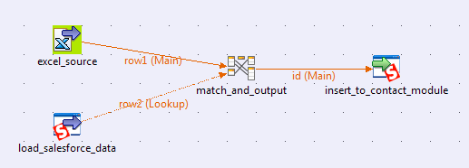
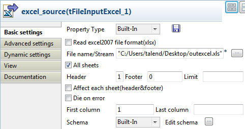
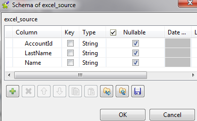
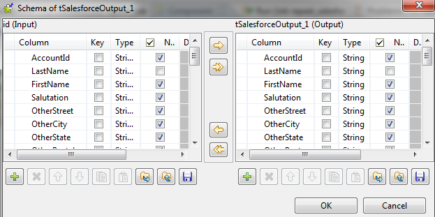

|
Component family |
Business/Cloud | |
|
Function |
tSalesforceoutput writes in an object of a Salesforce database via the relevant Web service. | |
|
Purpose |
Allows to write data into a Salesforce DB. | |
|
Basic settings |
Property type |
Either Built-in or Repository. If you are using Talend Open Studio for Big Data, only the Built-in mode is available. |
|
|
|
Built-in: No property data is stored centrally. |
|
|
|
Repository: Select the Repository file where Properties are stored. The fields that follow are pre-filled in using fetched data. |
|
|
Use an existing connection |
Select this check box and in the Component List click the relevant connection component to reuse the connection details you already defined. NoteWhen a Job contains the parent Job and the child Job, Component list presents only the connection components in the same Job level. |
|
|
Salesforce Webservice URL |
Type in the Web service URL to connect to the Salesforce DB. |
|
|
Username and Password |
Type in the Web service user authentication data. |
|
|
Timeout (milliseconds) |
Type in the intended number of query timeout in Salesforce.com. |
|
|
Action |
You can do any of the following operations on the data of the Salesforce object: Insert: insert data. Update: update data. Delete: delete data. Upsert: update and insert data. |
|
|
Upsert Key Column |
Specify the key column for the upsert operation. Available when Upsert is selected from the Action list. |
|
|
Module |
Select the relevant module in the list. Noteif you select the Use Custom module option, you display the Custom Module Name field where you can enter the name of the module you want to connect to. |
|
|
Schema and Edit Schema |
A schema is a row description, i.e., it defines the number of fields that will be processed and passed on to the next component. The schema is either Built-in or stored remotely in the Repository. Click Edit Schema to make changes to the schema. Note that if you make changes, the schema automatically becomes Built-in. Click Sync columns to retrieve the schema from the previous component connected in the Job. |
|
Advanced settings |
Extended Output |
This check box is selected by default. It allows to transfer output data in batches. You can specify the number of lines per batch in the Rows to commit field. |
|
|
Die on error |
This check box is selected by default. Clear the check box to skip the row on error and complete the process for error-free rows. If needed, you can retrieve the rows on error via a Row > Reject link. NoteThe Reject link is available only when you have deselected the Extended Output and Die on error check boxes. |
|
|
Error logging file |
If you want to create a file that holds all error logs, click the three-dot button next to this field and browse to the specified file to set its access path and its name. |
|
|
Use Socks Proxy |
Select this check box if you want to use a proxy server. Once selected, you need enter the connection parameters that are the host, the port, the username and the passerword of the Proxy you need to use. |
|
|
Ignore NULL fields values |
Select this check box to ignore NULL values in Update or Upsert mode. |
|
|
Use Soap Compression |
Select this check box to activate the SOAP compression. NoteThe compression of SOAP messages optimizes system performance. |
|
|
Retrieve inserted ID |
Select this check box to allow Salesforce.com to return the salesforce ID produced for a new row that is to be inserted. The ID column is added to the processed data schema in Salesforce.com. NoteThis option is available only when you have chosen insert action yet not in batch mode, i.e. not in the Extended Output option. |
|
|
tStatCatcher Statistics |
Select this check box to gather the Job processing metadata at a Job level as well as at each component level. |
|
|
Client ID |
Set the ID of the real user to differentiate between those who use the same account and password to access the salesforce website. |
|
|
Relationship mapping for upsert |
Click the [+] button to add lines as needed and specify the external ID fields in the input flow, the upsert module and the lookup module as well as the lookup module. Column name of Talend schema: external ID field in the input flow. Lookup field name: external ID field in the upsert module. Module name: name of the lookup module. External id name: external ID field in the lookup module. |
|
Usage |
Used as an output component. An Input component is required. | |
|
Limitation |
n/a | |
This scenario describes a two-component Job that removes an entry from the Account object.
Drop tSalesforceInput and tSalesforceOutput from the Palette onto the design workspace.
Connect the two components together using a Row > Main link.

Procedure 2.1. Querying the content to be deleted
Double-click tSalesforceInput to display its Basic settings view and define the component properties.

From the Property Type list, select Repository if you have already stored the connection to the salesforce server in the Metadata node of the Repository tree view. The property fields that follow are automatically filled in. If you have not defined the server connection locally in the Repository, fill in the details manually after selecting Built-in from the Property Type list.
For more information about how to create the salesforce metadata, see Talend Open Studio User Guide.
In the Salesforce WebService URL field, use the default URL of the Salesforce Web service or enter the URL you want to access or select the Use an existing connection check box to use an established connection.
In the Username and Password fields, enter your login and password for the Web service.
Type in your intended query timeout in the Timeout (milliseconds) field. In this example, use the default number.
From the Module list, select the object you want to access, Account in this example.
From the Schema list, select Repository and then click the three-dot button to open a dialog box where you can select the repository schema you want to use for this component. If you have not defined your schema locally in the metadata, select Built-in from the Schema list and then click the three-dot button next to the Edit schema field to open the dialog box where you can set the schema manually.
In the Query Condition field, enter the query you want to apply. In this example, we want to retrieve the clients whose names are sForce. To do this, we use the query:
“name=’sForce’”.For a more advanced query, select the Manual input of SOQL query and enter the query manually.
Procedure 2.2. Deleting the queried contents
Double-click tSalesforceOutput to display its Basic settings view and define the component properties.

In the Salesforce WebService URL field, use the default URL of the Salesforce Web service or enter the URL you want to access.
In the Username and Password fields, enter your login and password for the Web service.
Type in your intended query timeout in the Timeout (milliseconds) field. In this example, use the default number.
From the Action list, select the operation you want to carry out. In this example we select Delete to delete the sForce account selected in the previous component.
From the Module list, select the object you want to access, Account in this example.
Click Sync columns to retrieve the schema of the preceding component.
Press Ctrl+S to save your Job.
In this scenario, data in a local file is inserted to the AdditionalNumber module. Meanwhile, erroneous data in that file is collected via a Row > Reject link.
Drag and drop the following components from the Palette onto the workspace: tFileInputDelimited, tSalesforceOutput and two tLogRow components.
Rename tFileInputDelimited as DataToInsert, tSalesforceOutput as InsertToSalesforce, and the two tLogRow components as DataInserted as well as DataRejected respectively.
Link DataToInsert to InsertToSalesforce using a Row > Main connection.
Link InsertToSalesforce to DataInserted using a Row > Main connection.
Link InsertToSalesforce to DataRejected using a Row > Reject connection.
Note
Deselect the Extended Output and Die on error check boxes in the Advanced settings view of the tSalesforceOutput component so that the Reject link is available .

Procedure 2.3. Configuring the data source
Double-click DataToInsert to open its Basic settings view in the Component tab.

In the Property Type drop-down list, select Built-In.
Note
You can select Repository from the Property Type drop-down list to fill in the relevant fields automatically if the relevant metadata has been stored in the Repository. For more information about Metadata, see the Talend Open Studio User Guide.
In the File name/Stream field, type in the path of the source file, for example, E:/salesforceout.csv.
In the Header field, type in 1 to retrieve the column names. Keep the default settings for other fields.
Procedure 2.4. Configuring the module for data insertion
Double-click InsertToSalesforce to open its Basic settings view in the Component tab.

In the Username field, enter your username, for example, cantoine@talend.com.
In the Password field, enter your password, for example, talendehmrEvHz2xZ8f2KlmTCymS0XU.
In the Action drop-down list, select insert.
In the Module drop-down list, select AdditionalNumber.
Note
When linking the components earlier, the Extended Output and Die on error check boxes have been deselected in the Advanced settings view so that the Reject link can appear.
Keep the default settings for other fields.


In this scenario, the AccountIDs from an excel file are inserted to the Contact module at the www.salesforce.com based on the
matching of LastName and Name fields.
Drag and drop the following components from the Palette onto the workspace: tFileInputExcel, tSalesforceIntput, tMap and tSalesforceOutput.
Rename tFileInputExcel as excel_source, tSalesforceIntput as load_salesforce_data, tMap as match_and_output and tSalesforceOutput as insert_to_contact_module.
Link the components using a Row > Main connection.

Procedure 2.6. Configuring the source excel input
Double-click excel_source to open its Basic settings view in the Component tab.
Click the [...] button next to the File name/Stream field to select the source file.
The content looks like:

Select the All sheets check box to retrieve the data of the entire excel file.
Enter 1 in the Header field as the first line lists the column names.
Click the [...] button next to the Edit schema field to open the schema editor.
Click the [+] button to add three columns, i.e. AccountId, LastName and Name.
Click OK to close the editor. Keep other default settings as they are.
Procedure 2.7. Configuring the destination module and the desired operation
Double-click insert_to_contact_module to open its Basic settings view in the Component tab.

In the Username and Password fields, enter your authentication credentials.
Select insert in the Action list and Contact in the Module list.
Click the [...] button next to Edit schema to open the schema editor.
Click
 to copy all the columns from the output table to the
input table.
to copy all the columns from the output table to the
input table.Click OK to close the editor.
Procedure 2.8. Configuring the lookup source and establishing the mapping relations
Double-click load_salesforce_data to open its Basic settings view in the Component tab.

In the Username and Password fields, enter your authentication credentials.
In the Module list, select the Contact module to retrieve data.
Clear the Query Condition field.
Double-click match_and_output to open its map editor.

Select fields LastName and Name from the table row1 and drop them next to their counterparts in the table row2. This way, data from the excel file will be checked against their counterparts in the Contact module.
Select fields LastName and AccountID from the table row1 and drop them next to their counterparts in the table id. This way, qualified data from the excel file will be passed to their counterpart fields in the id table.
Click OK to close the map editor.